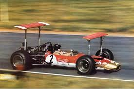

Formula 1 Quiz
Question 1
Which team has won the most Constructors' Championships in history?
Question 2
What is the name of the system used by drivers to open the rear wing
for overtaking?
Question 3
Which track hosts the famous "Night Race" through city streets?
Question 4
Who is the only driver to have won a World Championship posthumously?

Your Score: ----/4(----%)
F1 knowledge level indicator